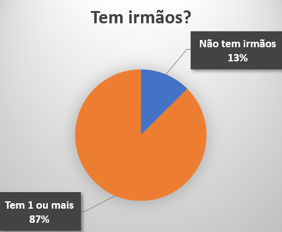
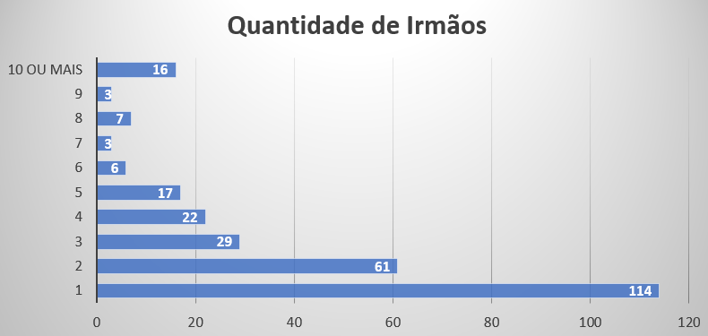

Essa pesquisa foi realizada por causa de um trabalho em grupo na disciplina de Geometria (Matemática II). Os integrantes desse grupo pesquisaram para colegas, amigos, familiares, vizinhos e outros...
Para a realização dessa pesquisa, nós fizemos perguntas para:
318 pessoas
Além disso, nós conseguimos adquirir as seguintes informações:
Tabela de Distribuição de Frequências:
| Valores | 0 | 1 | 2 | 3 | 4 | 5 | 6 | 7 | 8 | 9 | 10 ou mais |
|---|---|---|---|---|---|---|---|---|---|---|---|
| Frequência Absoluta | 40 | 114 | 61 | 29 | 22 | 17 | 6 | 3 | 7 | 3 | 16 |
| Frequência Relativa | 12% | 35% | 19% | 9% | 6% | 5% | 1% | 1% | 2% | 1% | 5% |
Gráfico sobre se tem irmão ou não:
Gráfico sobre a quantidade de irmãos:
Agradecemos a sua Atenção!